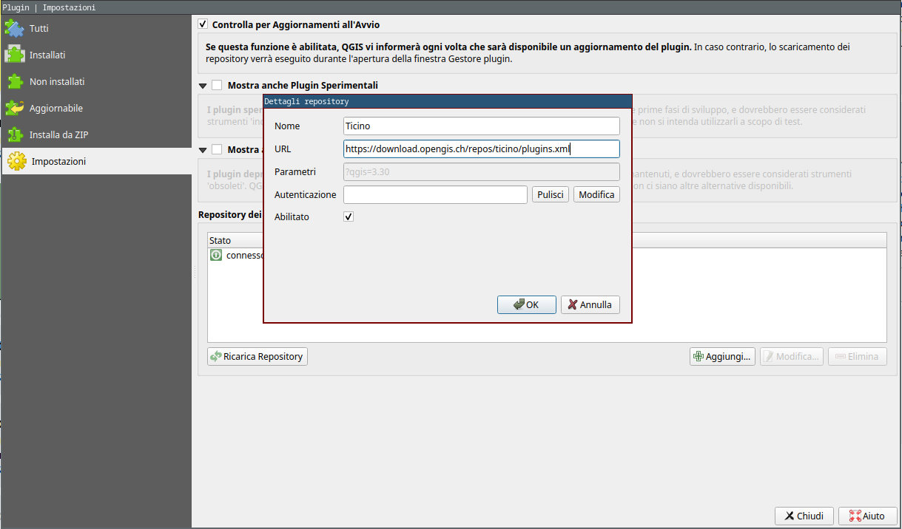
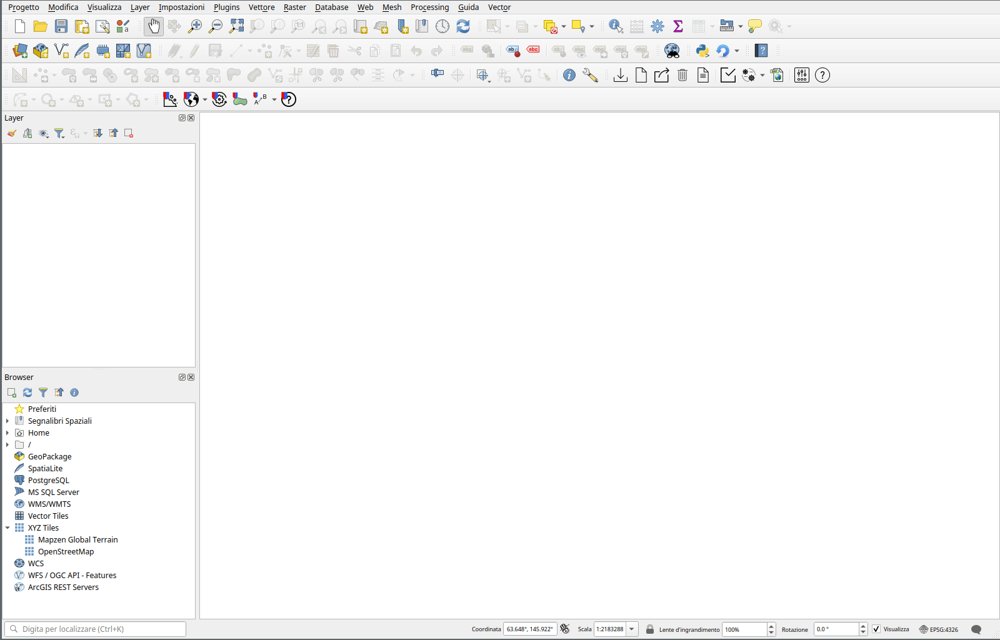
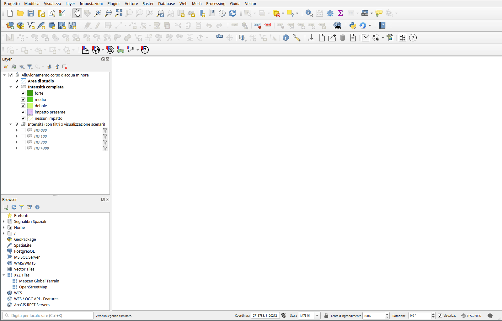
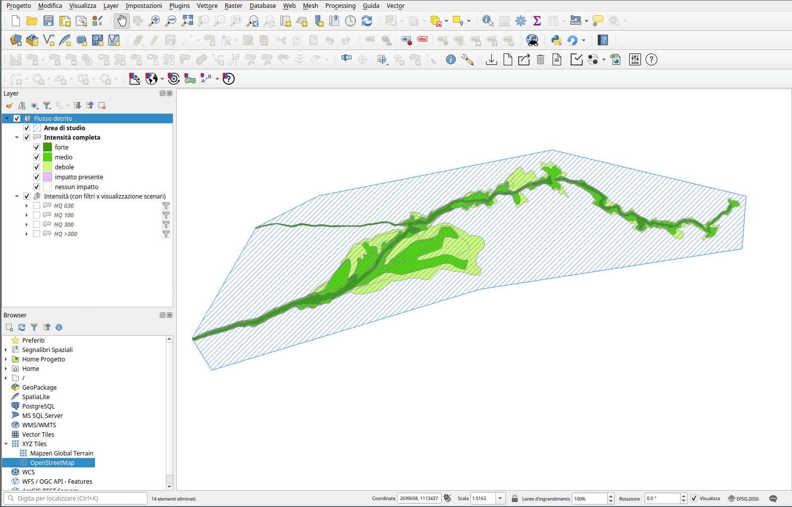
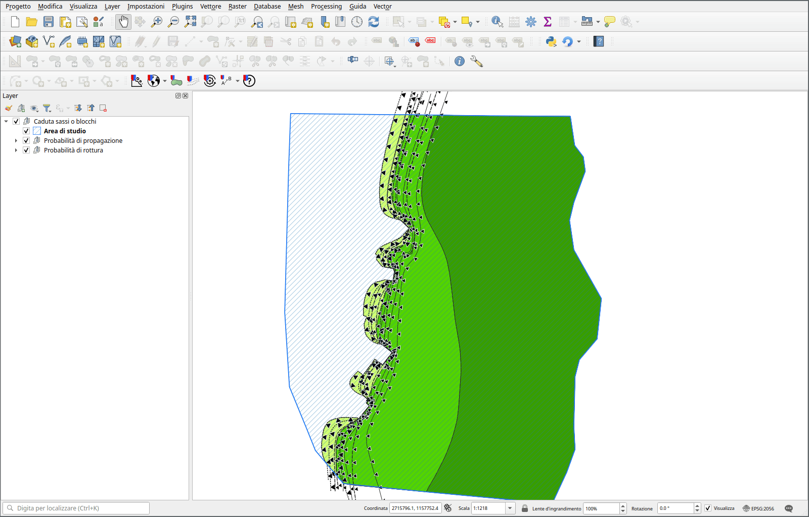
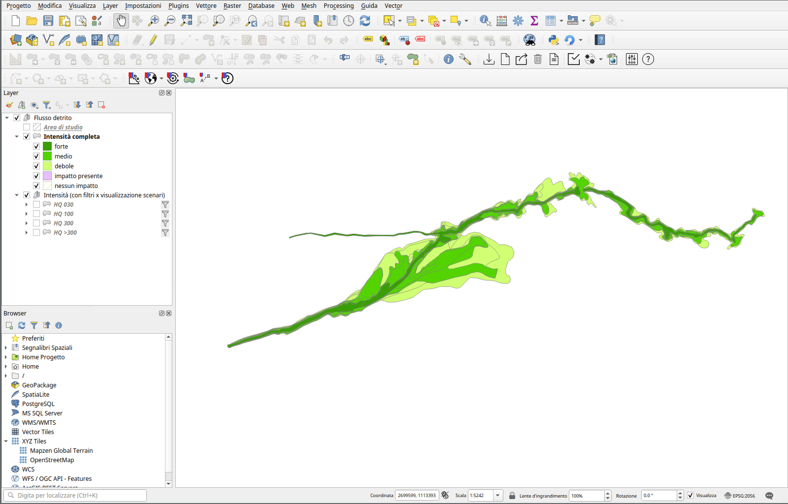
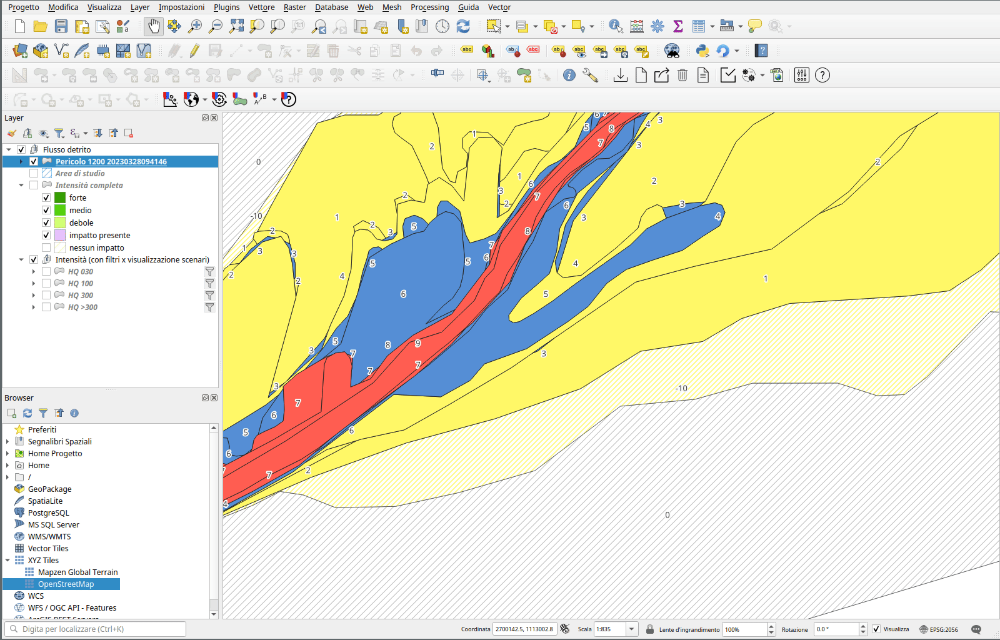

Plugin
Installazione
Per installare il plugin in QGIS è necessario aggiungere un nuovo repository dei plugin in QGIS:
È possibile aggiungere il repository andando nel menu Plugins -> Gestisci ed Installa Plugin...

https://download.opengis.ch/repos/ticino/plugins.xml
A questo punto è possibile installare il plugin chiamato pzp.
Nota
Richiede QGIS 3.28 Firenze (LTR), non testato per versioni superiori.
Funzionalità
Le funzionalità del plugin sono accessibili tramite la toolbar del plugin.
In particolare tramite la toolbar è possibile:
- aggiungere un nuovo processo con i relativi layer al progetto QGIS attuale
- aggiungere dei layer con dati di base o mappe di base
- eseguire il calcolo delle zone di nessun impatto
- generare il layer con le intensità tramite linee di propagazione
- eseguire il calcolo delle zone di pericolo
- modificare il valore delle zone di pericolo che hanno possibilità multiple
- consultare questo manuale online
Aggiunta dei layer per la registrazione di un processo al progetto QGIS
Tramite il pulsante "Aggiuni proceso" è possible aggiungere al progetto QGIS attuale un nuovo gruppo contenente i layer per digitalizzare le intensità.
Viene chiesto il percorso di una directory in cui salvare i dati (in formato GeoPackage) e il tipo di processo da aggiungere. Il processo che viene aggiunto consiste in un gruppo di layer. I layer variano a dipendenza del tipo di processo.

Aggiunta di layer con dati o mappe di base
Tramite i pulsanti "Aggiungi mappa base" e "Aggiungi dati base" è possibile aggiungere al progetto QGIS attuale i layer contenenti le mappe di base o i layer di base.

Digitalizzazione delle geometrie e layer
La digitalizzazione delle geometrie avviene tramite i normali strumenti di QGIS.
Area di studio
Questo layer permette di digitalizzare le aree di studio. Per ogni area di studio va definita una fonte del processo. La definizione delle aree di studio è necessaria per poter procedere con la digitalizzazione delle intensità.
Intensità
Questo layer permette di digitalizzare le intensità. Attributi necessari sono:
- il periodo di ritorno (in anni)
- l'intensità
- il processo rappresentato (viene impostato automaticamente in base al processo selezionato al momento della creazione)
- la fonte del processo (in relazione con le fonti di processo definite nelle aree di studio)
Probabilità di propagazione
Questo layer permette di digitalizzare le linee che definiscono le probabilità di propagazione. Attributi necessari sono:
- probabilità di propagazione
- fonte del processo
- probabilità di rottura (a cui la linea si riferisce)
Nota
Questo layer è presente solamente per il processo "Caduta sassi/blocchi/massi"
Probabilità di rottura
Questo layer permette di digitalizzare le geometrie che definiscono le probabilità di rottura. Attributi necessari sono:
- probabilià di rottura
- intensità
- fonte del processo
Nota
Questo layer è presente solamente per il processo "Caduta sassi/blocchi/massi"
Calcolo delle zone di nessun impatto

Tramite il pulsante "Calcolo delle zone di nessun impatto" è possibile generare le geometrie delle zone con nessun impatto, per fonte di processo, all'interno delle aree di studio. In pratica, per ogni area di studio, viene creata una geometria con intensità "nessun impatto" corrispondente a tutta la superficie dell'area di studio non coperta da altre geometrie della fonte di proceso in questione.
Nota
Per poter utilizzare questo pulsante occorre selezionare il gruppo contentente il processo nel pannello dei layer di QGIS
Generazione delle intensità tramite le linee di propagazione

Tramite il pulsante "Calcola propagazione" è possibile generare il layer delle intensità partendo dai layer con le probabilità di rottura e da quello con le linee di propagazione, per il processo di caduta sassi o blocchi.
Il layer generato può venir utilizzato per procedere al calcolo delle zone di pericolo, come per gli altri tipi di processo.
Calcolo delle zone di pericolo

Tramite questo pulsante "Calcolo delle zone di pericolo" è possibile generare un layer con le zone di pericolo. Viene generato un nuovo layer ogni volta che viene premuto il pulsante. Il nome del layer include il codice del processo, la data e l'ora di creazione. Il layer viene salvato nello stesso geopackage utilizzato dal processo in questione.
Nota
Per poter utilizzare questo pulsante occorre selezionare il gruppo contentente il processo nel pannello dei layer di QGIS
Modifica delle zone con possibilità multiple

Questo strumento permette di modificare il colore delle zone di pericolo che secondo la matrice possono avere più possibilità. Ad esempio per la matrice del Flusso di detrito, il pericolo 4 può essere giallo (4a) o blu (4b).
Premendo il pulsante "A->B", tutte le geometrie selezionate nel layer che hanno più possibilità diventeranno "B" e premendo il pulsante "B->A", diventeranno "A". Se nessuna geometria è selezionata nel layer, l'operazione viene eseguita su tutte le geometrie del layer con possibilità multipla.
Nota
Per poter utilizzare questo pulsante occorre selezionare il layer con le zone di pericolo sul quale si vuole eseguire l'operazione
Ottenere informazioni Alla pagina https://opengisch.github.io/pzp/
è presente la documentazione aggiornata. La pagina è accessibile tramite il pulsante "Aiuto" nel plugin.